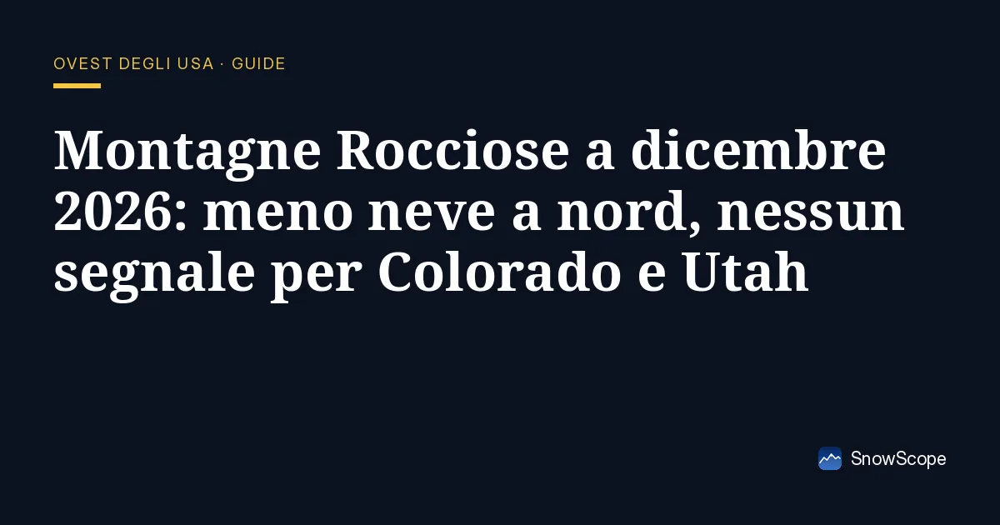
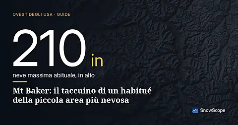

Montagne Rocciose a dicembre 2026: meno neve a nord, nessun segnale per Colorado e Utah
Dicembre sulle Montagne Rocciose dovrebbe risultare circa 0,9 °C più caldo della norma, con precipitazioni in linea con la media storica. Il quadro varia notevolmente per latitudine: le catene settentrionali indicano neve magra a inizio stagione, mentre Colorado e Utah non mostrano una chiara inclinazione in alcuna direzione.
Le previsioni neve in tempo reale per Rocky Mountains nell'app SnowScopeAltezza neve, allerte powder e mappa 3D, gratis.

Dove il segnale si divide
SnowScope confronta ogni area montuosa con il suo storico di dicembri passati. Sulle Montagne Rocciose, quattro aree su cinque—il 79 percento—non mostrano inclinazione né verso condizioni più nevose né più magre. Un quinto tende al magro, quasi tutto a nord dall'altopiano di Yellowstone attraverso le catene vicino a Jackson e Big Sky. Solo una manciata di picchi dell'Utah meridionale suggerisce neve più abbondante, appena l'1 percento della regione.
Le probabilità di neve fresca superiore alla media vanno dal 27 percento nelle zone più secche al 62 percento in quelle più umide, con un valore medio del 45 percento su tutta la catena.
Temperatura e umidità: il motivo della divisione
Cinquantuno previsioni stagionali dal centro meteorologico europeo concordano sul fatto che dicembre sarà più caldo del periodo di riferimento (1993–2016). Il caldo non è uniforme: raggiunge il picco nelle Montagne Rocciose Settentrionali a 1,7 °C, dove l'82 percento delle simulazioni mostra riscaldamento e solo il 33 percento anomalie umide. In Colorado il segnale si indebolisce a 0,3 °C, e nello Utah raggiunge 1,0 °C. Nel frattempo, le precipitazioni si collocano al 3 percento sotto la media di dicembre di 40 mm su tutta la catena, con l'ensemble quasi equamente diviso—45 percento più umido, 55 percento più secco.
Questo mix—caldo modesto e precipitazioni vicine alla norma o leggermente secche—lascia Colorado e Utah in stallo statistico. Le Montagne Rocciose Settentrionali, al contrario, affrontano una situazione più calda e leggermente più secca che storicamente favorisce manti nevosi dicembrini più sottili.


Colorado: terreno neutro
Le stazioni sciistiche del Colorado (Breckenridge, Vail, Winter Park, Beaver Creek, Steamboat, Copper Mountain) solitamente vedono 51 cm di neve fresca durante dicembre. Questa previsione prevede 46 cm—leggermente inferiore, ma entro il normale range di variazione. Solo il 42 percento dei dicembri passati con condizioni simili sono stati nevosi. Il quadro più ampio è la profondità: il 31 dicembre il Colorado di solito ha 84 cm al suolo; le prospettive indicano 80 cm, quasi identico.
I dicembri passati più simili a questa configurazione furono 1995, 1985 e 2003. Nessuno fu né ricco di neve né povero di neve; furono mesi ordinari. È quello che la previsione suggerisce ora: pianificate per un dicembre tipico e adattate se le singole tempeste si rivelano più grandi o più piccole della media stagionale.
Wasatch dello Utah: in linea con la media
Il terreno più elevato e umido dello Utah (Park City, Deer Valley, Snowbird, Alta, Solitude) riceve 71 cm di neve fresca in un dicembre normale. Le prospettive stagionali nuovamente suggeriscono 70 cm—quasi identico. La probabilità di superare la media storica è del 47 percento. Il 31 dicembre, il Wasatch di solito ha 103 cm al suolo, e questo è quello che la previsione prevede.
Nessuna sorpresa da pianificare: lo Utah sembra in linea per un dicembre simile ai decenni passati. La principale variabile sarà quando arrivano le tempeste e quanto sale la quota neve nei giorni caldi.
Montagne Rocciose Settentrionali: magre all'inizio, poi osservate
Le stazioni sciistiche del Montana e Wyoming (Big Sky, Jackson Hole, Whitefish, Sun Valley, Bridger Bowl) affrontano un rapporto di probabilità di dicembre più magro. La previsione prevede 60 cm di neve fresca—sotto i consueti 65 cm—e solo il 37 percento di probabilità di superare la media di dicembre. La profondità il 31 dicembre è prevista a 102 cm, in linea con la media storica. Il magro deriva dal caldo superiore alla media e dall'umidità vicina alla media: neve cadrà, ma pochi giorni saranno sufficientemente freddi per farla.
I pendii alti e esposti a nord hanno un vantaggio all'inizio del mese, prima dello scioglimento o della consolidazione da vento che assottiglia la base. Con il progredire del mese, la previsione a 7 giorni conta più dello schema mensile. Una o due grandi tempeste del Pacifico possono capovolgere il totale mensile, quindi controllate le prospettive settimanali prima della partenza piuttosto che affidarvi alla visione stagionale.
Conclusione pratica
Gli sciatori del Colorado e dello Utah dovrebbero pianificare un dicembre normale e prenotare senza esitazioni. Le Montagne Rocciose Settentrionali meritano una piccola cautela: puntate su terreno elevato nelle prime settimane e siate pronti a seguire l'ultimo percorso della tempesta più avanti nel mese. Tutte e tre le regioni trarranno beneficio dal controllare la mappa SnowScope sette giorni prima del viaggio—mostra il timing esatto della tempesta e la quota neve per elevazione, dettagli che una prospettiva mensile non può catturare.
Consigli per sciatori
- Colorado e Utah: trattate questo come un dicembre standard. Nessun segnale dalla previsione suggerisce di cambiare i vostri piani.
- Montagne Rocciose Settentrionali: privilegiate le piste alte e esposte a nord a inizio dicembre mentre la base è più fresca. I pendii inferiori e gli aspetti sudesposti potrebbero assottigliarsi più velocemente del solito.
- Controllate la previsione a 7 giorni una settimana prima del viaggio. Una singola grande tempesta del Pacifico può ridisegnare il quadro di dicembre e spostare le quote neve di centinaia di metri.
- Usate la mappa giornaliera di SnowScope per individuare la quota neve a ogni stazione e programmate le vostre discese su terreno ripido sopra di essa.
- Preparate strati e protezione solare: dicembre più caldo significa più sole e scioglimento più rapido su pendii esposti a sud, specialmente nel pomeriggio.
Su questi numeri
Le altezze neve delle località sono la neve più alta sui pendii superiori alla data indicata; sono stime per un'area, non una misura in un punto. Le previsioni possono cambiare. Leggi sempre il bollettino valanghe ufficiale prima del fuoripista.
Cita questo articolo
Per ricerca, didattica o stampa: numeri e grafici sono liberamente riutilizzabili con licenza CC BY 4.0 citando così.
SnowScope (2026), Montagne Rocciose a dicembre 2026: meno neve a nord, nessun segnale per Colorado e Utah, https://snowscope.app/blog/it/2026/11/rocky-mountains-december-2026-snow-outlook.html, consultato il 2026-11-10
SnowScope (Atlas Labs). (2026, November 10). Montagne Rocciose a dicembre 2026: meno neve a nord, nessun segnale per Colorado e Utah. SnowScope snow reports. https://snowscope.app/blog/it/2026/11/rocky-mountains-december-2026-snow-outlook.html
BibTeX
@misc{snowscope2026rockymountainsdecember20,
author = {{SnowScope (Atlas Labs)}},
title = {Montagne Rocciose a dicembre 2026: meno neve a nord, nessun segnale per Colorado e Utah},
year = {2026},
month = nov,
howpublished = {\url{https://snowscope.app/blog/it/2026/11/rocky-mountains-december-2026-snow-outlook.html}},
note = {Published 2026-11-10 09:32 UTC; accessed 2026-11-10}
}· CC BY 4.0 · Metodi, dati e strumenti →
Segui Rocky Mountains
Gratis: un messaggio quando arriva la neve e il meteo ogni mattina.
Altri bollettini neve

Big Sky, Montana, facile da immaginare: 5.850 acri sotto il Lone Peak, e una neve circa cinque volte più spessa vicino alla cima che alla base in 46 inverni passati.

Come passare il primo giorno a Park City Mountain, Utah, e quando andarci: il nostro storico dà circa 71 in (180 cm) come picco abituale a metà montagna in 46 inverni passati.

Mt Baker, Washington: circa 133 in (337 cm) di picco abituale a metà montagna in 46 inverni passati, un record mondiale di neve, nessun alloggio in quota.